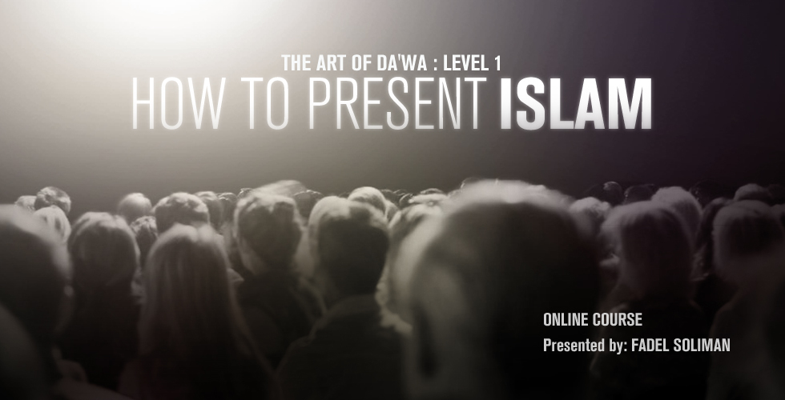

THE FOG IS LIFTING
A series of documentaries by Bridges-Foundaiton clarifies the most contradicional consepts. Plus 3 more series for you. All Multitranslated
In the first part of The Fog is Lifting “Islam in Brief”; you will learn in 74 minutes more information about Islamic believes
and rituals than what you can acquire in 74 days of reading.
For the viewer’s convenience, the Film consists of ten chapters; each one deals with one or more specific concept, belief or ritual, even though it
is recommended to watch the chapters in order.
Islam in Brief is originally a power point presentation given by Fadel Soliman-the author of the film- to over 40,000 non Muslims all over the globe;
in Churches, universities, conferences and government agencies, etc…
“Islam in Brief” is translated into 30 international Languages including the Hebrew language.
As the second part of “The Fog is Lifting” series “Jihad on Terrorism” tackles the most controversial misconception spread by the
west following 9/11, that Islam is the religion of terrorists, and that the Quran is a book of violence and hatred.
Through the Bridges
Foundation 100-minute documentary you will learn the true meaning of “Jihad”; that Islam gave people the way to end terror in the world,
and that jihad is the true war on terrorism.

Islam in Women is a documentary examining the phenomena surrounding the fact that a majority of new converts to Islam are women, regardless of the fact that
most of the Islamophobic attacks on Islam decry that it is discriminatory and oppressive toward women.
Through the candid and inspirational interviews of 12 female converts to Islam, including a non-Muslim woman, a professor from Al-Azhar University, and a professor
at Harvard Divinity School, Islam in Women reveals the secrets behind why the religion attracts more women than men, in addition to refuting many of the misconceptions
about women in Islam.Representing a diverse range of ethnic backgrounds, the women interviewed hail from Belgium, Britain, Germany, Greece, Hong Kong, Indonesia,
Netherlands, Sri Lanka, Sweden and the United States of America.
Islamophobia 1 Series

Ready to uncover the truth about Islam, Muslims, Sharia Muslims' lifestyle and the life of Prophet Muhammad (PBUH)? Our captivating 29-part YouTube series is here to answer your questions and debunk misconceptions! Such as:
- Is Religion the opiate of the masses?
- How could a prophet of God raid a caravan?
- Muhammad & Aesha, The Perfect Love Story
- Why do Muslim women wear Hijab?
- How Did Islam Deal with Slavery?
- Does Islam forbid Muslims from friendship with non Muslims?
- Can a Muslim be an actor or a musician?
- Are Women oppressed by Islam?
- Is it true that ex-Muslims should be killed?
- All of this and even more in the playlist!!
Don't Hate, Educate series
In less than Just half an hour and through out 30-Youtube-short-videos playlist,Discover the remarkable life and teachings of Prophet Muhammad (PBUH) in a concise and engaging format. This captivating playlist will provide insights into his personality, creation, manners, and lifestyle. Expand your knowledge and understanding of this revered figure as you immerse yourself in this enlightening series.
Islamophobia 2 Series

Do you find yourself pondering life's profound questions?........ You're not alone—we all have our own inquiries.
That's why we've curated a captivating YouTube series consisting of 30 enlightening videos that aim to address your questions and debunk common misconceptions about Religion, God, Islam, and more life, and way more things. Such as:
- Is Questioning Blasphemy ?
- Atheism or Religion?
- Why didn't God ask me before He created me?
- The perplexing Question; Who created God!
- If Allah is Just; Why is life so unfair
- Does the Qur'an address the mind or the heart?
- Does God love us?
- Does God love us?
- Is Jesus better or Muhammad ?
- Addiction
- and even more!!
Get ready to embark on a journey of knowledge and exploration!
That's why we've curated a captivating YouTube series consisting of 30 enlightening videos that aim to address your questions and debunk common misconceptions about Religion, God, Islam, and more life, and way more things. Such as:
- Is Questioning Blasphemy ?
- Atheism or Religion?
- Why didn't God ask me before He created me?
- The perplexing Question; Who created God!
- If Allah is Just; Why is life so unfair
- Does the Qur'an address the mind or the heart?
- Does God love us?
- Does God love us?
- Is Jesus better or Muhammad ?
- Addiction
- and even more!!
Get ready to embark on a journey of knowledge and exploration!
1001 Inventions: The Enduring Legacy of Muslim Civilization

1001 Inventions: The Enduring Legacy of Muslim Civilization takes readers on a journey through years of forgotten Islamic history to
discover one thousand fascinating scientific and technological inventions still being used throughout the world today. Take a look at
all of the discoveries that led to the great technological advances of our time; engineering, early medicinal practices, and the origins
of cartography are just a few of the areas explored in this book.
1001 Inventions provides unique insight into a significant time period in Muslim history that has been looked over by much of the world. A time where discoveries were made and inventions were created that have impacted how Western civilization and the rest of the world lives today. The book will cover seven aspects of life relatable to everyone, including home, school, hospital, market, town, world and universe.
Download and Purchase
You can explore way more interesting things on 1001inventions.com
And the YOUTUBE Channel
1001 inventions social media:
.png)


1001 Inventions and Awesome Facts From Muslim Civilization: Official Children's Companion to the 1001 Inventions Exhibition (1,000 Facts About)

We often think that people from a thouand years ago were living in the Dark Ages. But from the 7th century onward in
Muslim civilisation there were amazing advances and inventions that still influence our everyday lives.
People living in the Muslim world saw what the Egyptians, Chinese, Indians, Greek and Romans had discovered and spent
the next one thousand years adding new developments and ideas. Inventors created marvels like the elephant water clock,
explorers drew detailed maps of the world, women made scientific breakthroughs and founded universities, architects
built huge domes larger than anywhere else on earth. astronomers mapped the stars and so mucn more! This book takes
the winning formula of facts, photos and fun, and it applies it to this companion book to the 1001 inventions exhibit
from the Foundation for Science, Technology and Civilisation. Each page is packed with information on this little-known
history, but also shows how it still applies to our world today.
Download and Purchase
And don't forget about 1001inventions platforms
Speaking of which you can watch this interesting film:
(The Library Of Secrets)
Science and The Holy Quran

“We will show them Our signs in the universe and in their own selves, until it becomes manifest to them that this (the Quran) is the truth” (Quran; 41:53).
While the Quran is not a scientific textbook, it contains remarkable insights and arguments that extend beyond the realm of science.
Even though the Quran has been proven in many aspects and arguments unrelated to science, it also presents scientific miracles and
interesting facts.
It's worth noting that some people tend to exaggerate what they perceive as 'scientific miracles' within the Quran. However,
there are undeniably fascinating facts and observations to be found.
One intriguing point to consider is how an individual, who was illiterate and lived in the desert over a thousand and four
hundred years ago, could mention concepts and phenomena that were only discovered by modern science in the last century.
This raises questions about whether there was a profound connection between the author (Muhammad) and the Creator, as
described in the Quran.
You can check this interisting article
13 SCIENTIFIC FACTS IN THE HOLY QURAN
And you might find the upcoming video enjoyable.
(The Many Scientific Miracles of the Holy Quran)
Additionally,
we'll soon be sharing a list of trusged recommended books on this subject.
Toogle to view the list
THE STORY OF FAITH BETWEEN PHILOSOPHY, SCIENCE, AND THE QUR'AN

The story of Hayran Ibn al-Ad'af is the story of a young man whose passion in philosophy led him to search for answers to his doubts and perplexity of the creator of the universe, Allah, may he be exalted. and starts his journey after being expelled from his school for his passion about philosophy
This book by sheikh Nadim al-Jisr, the Mufti of Tripoli and Northern Lebanon, is the summary of the journey of Hayran Ibn al-Ad'af who entrusted him with his notebook of which its composition is that of a story of the discussions and the courses dictated which are in truth only answers of the Shiekh Abu An-Nur al-Mawzun, one of the important scholars of Samarqand to the questions of young Hayran.
In this book, the Sheikh al-Mawzun did not narrow his answers and explications to a simple statement of philosophical opinions, but he intervened to explain, direct, comment and criticize the thoughts of Greek, Muslim and the West philosophers and he also stated what is evoked in the Qur'an to reach faith and certainty.
Download and Purchase
If you know Arabic, please ensure that you do not miss the brilliant and immersive audio version of the book on the Bridges Foundation YouTube channel
Bridges' Translation of the Ten Qira’at of the Noble Qur’an

Description
Bridges’ translation was done with the aim of helping the non-Arabic reader in pondering the Qur’an (tadabbor). The translators focused not only on translating what God meant to say but also on translating how He spoke.
Main Features
It is the first translation which includes the ten Qira’at (modes of recitation). The main text is written in accordance with the most commonly used Qira’a: that of Asem, narrated by Hafs. Variations from that are represented in footnotes. The translation presents around 30% of the variations of the Qira’at—those which affect the meaning and can therefore be demonstrated in translation. The rest are merely dialectical and cannot therefore be demonstrated in English. Terms that have footnotes related to the Qira’at’ are written in the text in red, and the related footnotes can be enabled or disabled from the settings.
It is the first translation that takes into consideration the Qur’anic phenomenon of grammatical shifts, whether in verb tenses, numbers, or pronouns. These are a great source of pondering for the reader. Speaking about the Hereafter in the past tense is a frequent feature of the Qur’an and this has been respected in this translation.
To denote whether a pronoun like “you” or an imperative verb like “say” is plural, dual or singular, the translators did not impose their understanding on the reader by adding text between brackets like (O Prophet) to denote singular form, or (O mankind) to denote plural form. Rather, this distinction was achieved by adding a superscript after nouns, pronouns and imperative verbs. For example: youpl is used for a plural pronoun, yousg for a singular pronoun and youdl for a dual pronoun. Likewise, imperative verbs such as “say” are expressed as saypl for a plural verb, saysg for a singular verb and saydl for a dual verb. It must be noted that in the Qur’an most imperative verbs in the singular form are meant to address Prophet Muhammad (peace be upon him).
Download and Purchase
The Arts of Da’wa | Level 1 : How to present Islam
Mr.Fadel Soliman will teach you How To Represent Islam
Disclaimer: This has nothing to do with how much knowledge you have!
Presentation Skills and Public Speaking Skills:
– How to Talk with impact on the audience. – How to connect with the audience. – How to convey the message. – How to sound logical. – How to sound spiritual. – What is the meaning of D’awa. – Talking to Atheists and Agnostics.Presenting Islam:
– What is Islam – Who is Allah – Who is Prophet Muhammad – What is the purpose of life. – Explaining the 6 beliefs simply and clearly.Presenting Islamic Rituals:
– The meaning of the Shahada. – Why Muslims pray like that – The significance of Zakat, Fasting Ramadan & HajIntroducing Islamic Concepts:
– Hijab. – Status of Women in Islam. – Does Jihad equal terrorism? – Islam: a religion of peace or a religion of war? – Human rights. – Freedom of Speech. – Equality. – Brotherhood. – Justice.Note: it's possible to ask for sponsership and take it for free.